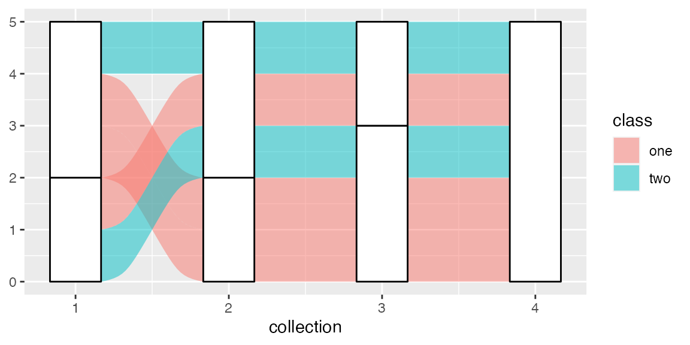

The Order of the Rectangles
Jason Cory Brunson
2020-07-14
Source:vignettes/order-rectangles.rmd
order-rectangles.rmdHow the strata and lodes at each axis are ordered, and how to control their order, is a complicated but essential part of ggalluvial’s functionality. This vignette explains the motivations behind the implementation and explores the functionality in greater detail than the examples.
Setup
knitr::opts_chunk$set(fig.width = 6, fig.height = 3, fig.align = "center") library(ggalluvial)
## Loading required package: ggplot2All of the functionality discussed in this vignette is exported by ggalluvial. We’ll also need a toy data set to play with. I conjured the data frame toy to be nearly as small as possible while complex enough to illustrate the positional controls:
# toy data set set.seed(0) toy <- data.frame( subject = rep(LETTERS[1:5], times = 4), collection = rep(1:4, each = 5), category = rep( sample(c("X", "Y"), 16, replace = TRUE), rep(c(1, 2, 1, 1), times = 4) ), class = c("one", "one", "one", "two", "two") ) print(toy)
## subject collection category class
## 1 A 1 Y one
## 2 B 1 X one
## 3 C 1 X one
## 4 D 1 Y two
## 5 E 1 X two
## 6 A 2 X one
## 7 B 2 Y one
## 8 C 2 Y one
## 9 D 2 X two
## 10 E 2 X two
## 11 A 3 X one
## 12 B 3 Y one
## 13 C 3 Y one
## 14 D 3 Y two
## 15 E 3 X two
## 16 A 4 X one
## 17 B 4 X one
## 18 C 4 X one
## 19 D 4 X two
## 20 E 4 X twoThe subjects are classified into categories at each collection point but are also members of fixed classes. Here’s how ggalluvial visualizes these data under default settings:
ggplot(toy, aes(x = collection, stratum = category, alluvium = subject)) + geom_alluvium(aes(fill = class)) + geom_stratum()

Motivations
The amount of control the stat layers stat_alluvial() and stat_flow() exert over the positional aesthetics of graphical objects (grobs) is unusual, by the standards of ggplot2 and many of its extensions. In the layered grammar of graphics framework, the role of a statistical transformation is usually to summarize the original data, for example by binning (stat_bin()) or by calculating quantiles (stat_qq()). These transformed data are then sent to geom layers for positioning. The positions of grobs may be adjusted after the statistical transformation, for example when points are jittered (geom_jitter()), but the numerical data communicated by the plot are still the product of the stat.
In ggalluvial, the stat layers exert slightly more control. For one thing, the transformation is more sophisticated than a single value or a fixed-length vector, such as a mean, standard deviation, or five-number summary. Instead, the values of y (which default to 1) within each collection are, after reordering, transformed using cumsum() and some additional arithmetic to obtain coordinates for the centers y and lower and upper limits ymin and ymax of the strata representing the categories. Additionally, the reordering of lodes within each collection relies on a hierarchy of sorting variables, based on the strata at nearby axes as well as the present one and, optionally, on the values of differentiation aesthetics like fill. How this hierarchy is invoked depends on the choices of several plotting parameters (decreasing, reverse, and absolute). Thus, the results of the statistical transformations are not as intrinsically meaningful as others and are subject to much more intervention by the user. Only once the transformations have produced these coordinates do the geom layers use them to position the rectangles and splines that constitute the plot.
There are two key reasons for this division of labor:
- The coordinates returned by some stat layers can be coupled with multiple geom layers. For example, all four geoms can couple with the
alluviumstat. Moreover, as showcased in the examples, the stats can also meaningfully couple with exogenous geoms liketext,pointrange, anderrorbar. (In principle, the geoms could also couple with exogenous stats, but i haven’t done this or seen it done in the wild.) - Different parameters control the calculations of the coordinates (e.g.
aes.bindandcement.alluvia) and the rendering of the graphical elements (width,knot.pos, andaes.flow), and it makes intuitive sense to handle these separately. For example, the heights of the strata and lodes convey information about the underlying data, whereas their widths are arbitrary.
(If the data are provided in alluvia format, then Stat*$setup_data() converts them to lodes format in preparation for the main transformation. This can be done manually using the exported conversion functions, and this vignette will assume the data are already in lodes format.)
Positioning strata
Each stat layer demarcates one stack for each data collection point and one rectangle within each stack for each (non-empty) category.1 In ggalluvial terms, the collection points are axes and the rectangles are strata or lodes.
To generate a sequence of stacked bar plots with no connecting flows, only the aesthetics x (standard) and stratum (custom) are required:
# collection point and category variables only data <- structure(toy[, 2:3], names = c("x", "stratum")) # required fields for stat transformations data$y <- 1 data$PANEL <- 1 # stratum transformation StatStratum$compute_panel(data)
## x stratum y n count deposit prop ymin ymax
## 2 1 Y 1.0 2 2 1 0.4 0 2
## 1 1 X 3.5 3 3 2 0.6 2 5
## 4 2 Y 1.0 2 2 3 0.4 0 2
## 3 2 X 3.5 3 3 4 0.6 2 5
## 6 3 Y 1.5 3 3 5 0.6 0 3
## 5 3 X 4.0 2 2 6 0.4 3 5
## 7 4 X 2.5 5 5 7 1.0 0 5Comparing this output to toy, notice first that the data have been aggregated: Each distinct combination of x and stratum occupies only one row. x encodes the axes and is subject to layers specific to this positional aesthetic, e.g. scale_x_*() transformations. ymin and ymax are the lower and upper bounds of the rectangles, and y is their vertical centers. Each stacked rectangle begins where the one below it ends, and their heights are the numbers of subjects (or the totals of their y values, if y is passed a numerical variable) that take the corresponding category value at the corresponding collection point.
Here’s the plot this strata-only transformation yields:
ggplot(toy, aes(x = collection, stratum = category)) + stat_stratum() + stat_stratum(geom = "text", aes(label = category))

In this vignette, i’ll use the stat_*() functions to add layers, so that the parameters that control their behavior are accessible via tab-completion.
Reversing the strata
Within each axis, stratum defaults to reverse order so that the bars proceed in the original order from top to bottom. This can be overridden by setting reverse = FALSE in stat_stratum():
# stratum transformation with strata in original order StatStratum$compute_panel(data, reverse = FALSE)
## x stratum y n count deposit prop ymin ymax
## 1 1 X 1.5 3 3 1 0.6 0 3
## 2 1 Y 4.0 2 2 2 0.4 3 5
## 3 2 X 1.5 3 3 3 0.6 0 3
## 4 2 Y 4.0 2 2 4 0.4 3 5
## 5 3 X 1.0 2 2 5 0.4 0 2
## 6 3 Y 3.5 3 3 6 0.6 2 5
## 7 4 X 2.5 5 5 7 1.0 0 5ggplot(toy, aes(x = collection, stratum = category)) + stat_stratum(reverse = FALSE) + stat_stratum(geom = "text", aes(label = category), reverse = FALSE)

Warning: The caveat to this is that, if reverse is declared in any layer, then it must be declared in every layer, lest the layers be misaligned. This includes any alluvium, flow, and lode layers, since their graphical elements are organized within the bounds of the strata.
Sorting the strata by size
When the strata are defined by a character or factor variable, they default to the order of the variable (lexicographic in the former case). This can be overridden by the decreasing parameter, which defaults to NA but can be set to TRUE or FALSE to arrange the strata in decreasing or increasing order in the y direction:
# stratum transformation with strata in original order StatStratum$compute_panel(data, reverse = FALSE)
## x stratum y n count deposit prop ymin ymax
## 1 1 X 1.5 3 3 1 0.6 0 3
## 2 1 Y 4.0 2 2 2 0.4 3 5
## 3 2 X 1.5 3 3 3 0.6 0 3
## 4 2 Y 4.0 2 2 4 0.4 3 5
## 5 3 X 1.0 2 2 5 0.4 0 2
## 6 3 Y 3.5 3 3 6 0.6 2 5
## 7 4 X 2.5 5 5 7 1.0 0 5ggplot(toy, aes(x = collection, stratum = category)) + stat_stratum(decreasing = TRUE) + stat_stratum(geom = "text", aes(label = category), decreasing = TRUE)

Warning: The same caveat applies to decreasing as to reverse: Make sure that all layers using alluvial stats are passed the same values! Henceforth, we’ll use the default (reverse and categorical) ordering of the strata themselves.
Positioning lodes within strata
Alluvia and flows
In the strata-only plot, each subject is represented once at each axis. Alluvia are x-splines that connect these multiple representations of the same subjects across the axes. In order to avoid having these splines overlap at the axes, the alluvium stat must stack the alluvial cohorts—subsets of subjects who have a common profile across all axes—within each stratum. These smaller cohort-specific rectangles are the lodes. This calculation requires the additional custom alluvium aesthetic, which identifies common subjects across the axes:
# collection point, category, and subject variables data <- structure(toy[, 1:3], names = c("alluvium", "x", "stratum")) # required fields for stat transformations data$y <- 1 data$PANEL <- 1 # alluvium transformation StatAlluvium$compute_panel(data)
## x alluvium stratum y PANEL lode n count deposit prop ymin ymax group
## 1 1 A Y 1.5 1 A 1 1 1 0.2 1 2 1
## 2 1 B X 3.5 1 B 1 1 2 0.2 3 4 2
## 3 1 C X 2.5 1 C 1 1 2 0.2 2 3 3
## 4 1 D Y 0.5 1 D 1 1 1 0.2 0 1 4
## 5 1 E X 4.5 1 E 1 1 2 0.2 4 5 5
## 6 2 A X 3.5 1 A 1 1 4 0.2 3 4 1
## 7 2 B Y 1.5 1 B 1 1 3 0.2 1 2 2
## 8 2 C Y 0.5 1 C 1 1 3 0.2 0 1 3
## 9 2 D X 2.5 1 D 1 1 4 0.2 2 3 4
## 10 2 E X 4.5 1 E 1 1 4 0.2 4 5 5
## 11 3 A X 3.5 1 A 1 1 6 0.2 3 4 1
## 12 3 B Y 1.5 1 B 1 1 5 0.2 1 2 2
## 13 3 C Y 0.5 1 C 1 1 5 0.2 0 1 3
## 14 3 D Y 2.5 1 D 1 1 5 0.2 2 3 4
## 15 3 E X 4.5 1 E 1 1 6 0.2 4 5 5
## 16 4 A X 3.5 1 A 1 1 7 0.2 3 4 1
## 17 4 B X 1.5 1 B 1 1 7 0.2 1 2 2
## 18 4 C X 0.5 1 C 1 1 7 0.2 0 1 3
## 19 4 D X 2.5 1 D 1 1 7 0.2 2 3 4
## 20 4 E X 4.5 1 E 1 1 7 0.2 4 5 5The transformed data now contain one row per cohort—instead of per category—per collection point. The vertical positional aesthetics describe the lodes rather than the strata, and the group variable encodes the alluvia (a convenience for the geom layer, and the reason that ggalluvial stat layers ignore variables passed to group).
Here’s how this transformation translates into the alluvial plot that began the vignette, labeling the subject of each alluvium at each intersection with a stratum:
ggplot(toy, aes(x = collection, stratum = category, alluvium = subject)) + stat_alluvium(aes(fill = class)) + stat_stratum(alpha = .25) + stat_alluvium(geom = "text", aes(label = subject))

The flow stat differs from the alluvium stat by allowing the orders of the lodes within strata to differ from one side of an axis to the other. Put differently, the flow stat allows mixing at the axes, rather than requiring that each case or cohort is follows a continuous trajectory from one end of the plot to the other. As a result, flow plots are often much less cluttered, the trade-off being that cases or cohorts cannot be tracked through them.
# flow transformation StatFlow$compute_panel(data)
## alluvium x stratum deposit flow y n count lode group prop ymin ymax
## 3 2 1 Y 1 from 1.0 2 2 A 2 0.4 0 2
## 1 1 1 X 2 from 3.0 2 2 B 1 0.4 2 4
## 5 3 1 X 2 from 4.5 1 1 E 3 0.2 4 5
## 2 1 2 Y 3 to 1.0 2 2 B 1 0.2 0 2
## 4 2 2 X 4 to 3.0 2 2 A 2 0.2 2 4
## 6 3 2 X 4 to 4.5 1 1 E 3 0.1 4 5
## 7 4 2 Y 3 from 1.0 2 2 B 4 0.2 0 2
## 9 5 2 X 4 from 2.5 1 1 D 5 0.1 2 3
## 11 6 2 X 4 from 4.0 2 2 A 6 0.2 3 5
## 8 4 3 Y 5 to 1.0 2 2 B 4 0.2 0 2
## 10 5 3 Y 5 to 2.5 1 1 D 5 0.1 2 3
## 12 6 3 X 6 to 4.0 2 2 A 6 0.2 3 5
## 13 7 3 Y 5 from 1.5 3 3 B 7 0.3 0 3
## 15 8 3 X 6 from 4.0 2 2 A 8 0.2 3 5
## 14 7 4 X 7 to 1.5 3 3 B 7 0.6 0 3
## 16 8 4 X 7 to 4.0 2 2 A 8 0.4 3 5The flow stat transformation yields one row per cohort per side per flow. Each intermediate axis appears twice in the data, once for the incoming flow and once for the outgoing flow. (The starting and ending axes only have rows for outgoing and incoming flows, respectively.) Here is the flow version of the preceding alluvial plot, labeling each side of each flow with the corresponding subject:
ggplot(toy, aes(x = collection, stratum = category, alluvium = subject)) + stat_stratum() + stat_flow(aes(fill = class)) + stat_flow(geom = "text", aes(label = subject, hjust = after_stat(flow) == "to"))

The computed variable flow indicates whether each row of the compute_panel() output corresponds to a flow to or from its axis; the values are used to nudge the labels toward their respective flows (to avoid overlap). Mismatches between adjacent labels indicate where lodes are ordered differently on either side of a stratum.
Lode guidance
As the number of strata at each axis grows, heterogeneous cases or cohorts can produce highly complex alluvia and very messy plots. ggalluvial mitigates this by strategically arranging the lodes—the intersections of the alluvia with the strata—so as to reduce their crossings between adjacent axes. This strategy is executed locally: At each axis (call it the index axis), the order of the lodes is guided by several totally or partially ordered variables. In order of priority:
- the strata at the index axis
- the strata at the other axes to which the index axis is linked by alluvia or flows—namely, all other axes in the case of an alluvium, or a single adjacent axis in the case of a flow
- the alluvia themselves, i.e. the variable passed to
alluvium
In the alluvium case, the prioritization of the remaining axes is determined by a lode guidance function. A lode guidance function can be passed to the lode.guidance parameter, which defaults to "zigzag". This function puts the nearest (adjacent) axes first, then zigzags outward from there, initially (the “zig”) in the direction of the closer extreme:
for (i in 1:4) print(lode_zigzag(4, i))
## [1] 1 2 3 4
## [1] 2 1 3 4
## [1] 3 4 2 1
## [1] 4 3 2 1Several alternative lode_*() functions are available:
-
"zagzig"behaves like"zigzag"except initially “zags” toward the farther extreme. -
"frontback"and"backfront"behave like"zigzag"but extend completely in one outward direction from the index axis before the other. -
"forward"and"backward"put the remaining axes in increasing and decreasing order, regardless of the relative position of the index axis.
Two alternatives are illustrated below:
for (i in 1:4) print(lode_backfront(4, i))
## [1] 1 2 3 4
## [1] 2 1 3 4
## [1] 3 2 1 4
## [1] 4 3 2 1ggplot(toy, aes(x = collection, stratum = category, alluvium = subject)) + stat_alluvium(aes(fill = class), lode.guidance = "backfront") + stat_stratum() + stat_alluvium(geom = "text", aes(label = subject), lode.guidance = "backfront")

The difference between "backfront" guidance and "zigzag" guidance can be seen in the order of the lodes of the "Y" stratum at axis 3: Whereas "zigzag" minimized the crossings between axes 3 and 4, locating the distinctive class-"one" case above the others, "backfront" minimized the crossings between axes 2 and 3 (axis 2 being immediately before axis 3), locating this case below the others.
for (i in 1:4) print(lode_backward(4, i))
## [1] 1 4 3 2
## [1] 2 4 3 1
## [1] 3 4 2 1
## [1] 4 3 2 1ggplot(toy, aes(x = collection, stratum = category, alluvium = subject)) + stat_alluvium(aes(fill = class), lode.guidance = "backward") + stat_stratum() + stat_alluvium(geom = "text", aes(label = subject), lode.guidance = "backward")

The effect of "backward" guidance is to keep the right part of the plot as tidy as possible while allowing the left part to become as messy as necessary. ("forward" has the opposite effect.)
Aesthetic binding
It often makes sense to bundle together the cases and cohorts that fall into common groups used to assign differentiation aesthetics: most commonly fill, but also alpha, which controls the opacity of the fill colors, and colour, linetype, and size, which control the borders of the alluvia, flows, and lodes.
The aes.bind parameter defaults to "none", in which case aesthetics play no role in the order of the lodes. Setting the parameter to "flows" prioritizes any such aesthetics after the strata of any other axes but before the alluvia of the index axis (effectively ordering the flows at each axis by aesthetic), while setting it to "alluvia" prioritizes aesthetics before the strata of any other axes (effectively ordering the alluvia). In the toy example, the stronger option results in the lodes within each stratum being sorted first by class:
ggplot(toy, aes(x = collection, stratum = category, alluvium = subject)) + stat_alluvium(aes(fill = class, label = subject), aes.bind = "alluvia") + stat_stratum() + stat_alluvium(geom = "text", aes(fill = class, label = subject), aes.bind = "alluvia")
## Warning: Ignoring unknown aesthetics: label## Warning: Ignoring unknown aesthetics: fill
The more flexible option groups the lodes by class only after they’ve been ordered according to the strata at the remaining axes:
ggplot(toy, aes(x = collection, stratum = category, alluvium = subject)) + stat_alluvium(aes(fill = class, label = subject), aes.bind = "flows") + stat_stratum() + stat_alluvium(geom = "text", aes(fill = class, label = subject), aes.bind = "flows")
## Warning: Ignoring unknown aesthetics: label## Warning: Ignoring unknown aesthetics: fill
Warning: In addition to parameters like reverse, when aesthetic variables are prioritized at all, overlaid alluvial layers must include the same aesthetics in the same order. (This can produce warnings when the aesthetics are not recognized by the geom.) Try removing fill = class from the text geom above to see the risk posed by neglecting this check.
Rather than ordering lodes within, the flow stat separately orders the flows into and out from, each stratum. (This precludes a corresponding "alluvia" option for aes.bind.) By default, the flows are ordered with respect first to the orders of the strata at the present axis and second to those at the adjacent axis. Setting aes.bind to the non-default option "flows" tells stat_flow() to prioritize flow aesthetics after the strata of the index axis but before the strata of the adjacent axis:
ggplot(toy, aes(x = collection, stratum = category, alluvium = subject)) + stat_flow(aes(fill = class, label = subject), aes.bind = "flows") + stat_stratum() + stat_flow(geom = "text", aes(fill = class, label = subject, hjust = after_stat(flow) == "to"), aes.bind = "flows")
## Warning: Ignoring unknown aesthetics: label## Warning: Ignoring unknown aesthetics: fill
Note: The aes.flow parameter tells geom_flow() how flows should inherit differentiation aesthetics from adjacent axes—"forward" or "backward". It does not influence their positions.
Manual lode ordering
Finally, one may wish to put the lodes at each axis in a predefined order, subject to their being located in the correct strata. This can be done by passing a data column to the order aesthetic. For the toy example, we can pass a vector that puts the cases in the order of their IDs in the data at every axis:
lode_ord <- rep(seq(5), times = 4) ggplot(toy, aes(x = collection, stratum = category, alluvium = subject)) + stat_alluvium(aes(fill = class, order = lode_ord)) + stat_stratum() + stat_alluvium(geom = "text", aes(fill = class, order = lode_ord, label = subject))
## Warning: Ignoring unknown aesthetics: order## Warning: Ignoring unknown aesthetics: fill, order
ggplot(toy, aes(x = collection, stratum = category, alluvium = subject)) + stat_flow(aes(fill = class, order = lode_ord)) + stat_stratum() + stat_flow(geom = "text", aes(fill = class, order = lode_ord, label = subject, hjust = after_stat(flow) == "to"))
## Warning: Ignoring unknown aesthetics: order## Warning: Ignoring unknown aesthetics: fill, order
Within each stratum at each axis, the cases are now in order from top to bottom.
Negative strata
In response to an elegant real-world use case, ggalluvial can now handle negative observations in the same way as geom_bar(): by grouping these observations into negative strata and stacking these strata in the negative y direction (i.e. in the opposite direction of the positive strata). This new functionality complicates the above discussion in two ways:
-
Positioning strata: The negative strata could be reverse-ordered with respect to the positive strata, as in
geom_bar(), or ordered in the same way (vertically, without regard for sign). - Positioning lodes within strata: Two strata may correspond to the same stratum variable at an axis (one positive and one negative), which under-determines the ordering of lodes within strata.
The first issue is binary: Once decreasing and reverse are chosen, there are only two options for the negative strata. The choice is made by setting the new absolute parameter to either TRUE (the default), which yields a mirror-image ordering, or FALSE, which adopts the same vertical ordering. This setting also influences the ordering of lodes within strata at the same nexus as reverse, namely at the level of the alluvium variable. The second issue is then handled by creating a deposit variable with unique values corresponding to each signed stratum variable value, in the order prescribed by decreasing, reverse, and absolute. The deposit variable is then used in place of stratum for all of the lode-ordering tasks above.
As a point of reference, here is a bar plot of the toy data, with a randomized sign variable used to indicate negative-valued observations:
## subject collection category class sign
## 1 A 1 Y one -1
## 2 B 1 X one 1
## 3 C 1 X one 1
## 4 D 1 Y two -1
## 5 E 1 X two 1
## 6 A 2 X one 1
## 7 B 2 Y one 1
## 8 C 2 Y one 1
## 9 D 2 X two -1
## 10 E 2 X two -1
## 11 A 3 X one 1
## 12 B 3 Y one -1
## 13 C 3 Y one -1
## 14 D 3 Y two 1
## 15 E 3 X two 1
## 16 A 4 X one 1
## 17 B 4 X one 1
## 18 C 4 X one -1
## 19 D 4 X two -1
## 20 E 4 X two 1ggplot(toy, aes(x = collection, y = sign)) + geom_bar(aes(fill = class), stat = "identity")

The default behavior, illustrated here with flows, is for the positive strata to proceed downward and the negative strata to proceed upward, in both cases from larger absolute values to zero:
ggplot(toy, aes(x = collection, stratum = category, alluvium = subject, y = sign)) + geom_flow(aes(fill = class)) + geom_stratum() + geom_text(stat = "stratum", aes(label = category))

To instead have the strata proceed downward at each axis, and the lodes downward within each stratum, set absolute = FALSE (now plotting alluvia):
ggplot(toy, aes(x = collection, stratum = category, alluvium = subject, y = sign)) + geom_alluvium(aes(fill = class), absolute = FALSE) + geom_stratum(absolute = FALSE) + geom_text(stat = "alluvium", aes(label = subject), absolute = FALSE)

Note again that the labels are consistent with the alluvia and flows, despite the omission of the fill aesthetic from the text geom, because the aesthetic variables are not prioritized in the ordering of the lodes.
More examples
More examples of all of the functionality showcased here can be found in the documentation for the stat_*() functions, browsable on the package website.
Appendix
sessioninfo::session_info()
## ─ Session info ───────────────────────────────────────────────────────────────
## setting value
## version R version 4.0.0 (2020-04-24)
## os macOS High Sierra 10.13.6
## system x86_64, darwin17.0
## ui X11
## language (EN)
## collate en_US.UTF-8
## ctype en_US.UTF-8
## tz America/New_York
## date 2020-07-14
##
## ─ Packages ───────────────────────────────────────────────────────────────────
## package * version date lib source
## assertthat 0.2.1 2019-03-21 [2] CRAN (R 4.0.0)
## backports 1.1.8 2020-06-17 [2] CRAN (R 4.0.0)
## cli 2.0.2 2020-02-28 [2] CRAN (R 4.0.0)
## colorspace 1.4-1 2019-03-18 [2] CRAN (R 4.0.0)
## crayon 1.3.4 2017-09-16 [2] CRAN (R 4.0.0)
## desc 1.2.0 2018-05-01 [2] CRAN (R 4.0.0)
## digest 0.6.25 2020-02-23 [2] CRAN (R 4.0.0)
## dplyr 1.0.0 2020-05-29 [2] CRAN (R 4.0.0)
## ellipsis 0.3.1 2020-05-15 [2] CRAN (R 4.0.0)
## evaluate 0.14 2019-05-28 [2] CRAN (R 4.0.0)
## fansi 0.4.1 2020-01-08 [2] CRAN (R 4.0.0)
## farver 2.0.3 2020-01-16 [2] CRAN (R 4.0.0)
## fs 1.4.2 2020-06-30 [2] CRAN (R 4.0.0)
## generics 0.0.2 2018-11-29 [2] CRAN (R 4.0.0)
## ggalluvial * 0.12.0 2020-07-14 [1] local
## ggplot2 * 3.3.2 2020-06-19 [2] CRAN (R 4.0.0)
## glue 1.4.1 2020-05-13 [2] CRAN (R 4.0.0)
## gtable 0.3.0 2019-03-25 [2] CRAN (R 4.0.0)
## htmltools 0.5.0 2020-06-16 [2] CRAN (R 4.0.0)
## knitr 1.29 2020-06-23 [2] CRAN (R 4.0.0)
## labeling 0.3 2014-08-23 [2] CRAN (R 4.0.0)
## lifecycle 0.2.0 2020-03-06 [2] CRAN (R 4.0.0)
## magrittr 1.5 2014-11-22 [2] CRAN (R 4.0.0)
## MASS 7.3-51.5 2019-12-20 [2] CRAN (R 4.0.0)
## memoise 1.1.0 2017-04-21 [2] CRAN (R 4.0.0)
## munsell 0.5.0 2018-06-12 [2] CRAN (R 4.0.0)
## pillar 1.4.5 2020-07-09 [2] CRAN (R 4.0.0)
## pkgconfig 2.0.3 2019-09-22 [2] CRAN (R 4.0.0)
## pkgdown 1.5.1 2020-04-09 [2] CRAN (R 4.0.0)
## purrr 0.3.4 2020-04-17 [2] CRAN (R 4.0.0)
## R6 2.4.1 2019-11-12 [2] CRAN (R 4.0.0)
## Rcpp 1.0.5 2020-07-06 [2] CRAN (R 4.0.0)
## rlang 0.4.6 2020-05-02 [2] CRAN (R 4.0.0)
## rmarkdown 2.3 2020-06-18 [2] CRAN (R 4.0.0)
## rprojroot 1.3-2 2018-01-03 [2] CRAN (R 4.0.0)
## scales 1.1.1 2020-05-11 [2] CRAN (R 4.0.0)
## sessioninfo 1.1.1 2018-11-05 [2] CRAN (R 4.0.0)
## stringi 1.4.6 2020-02-17 [2] CRAN (R 4.0.0)
## stringr 1.4.0 2019-02-10 [2] CRAN (R 4.0.0)
## tibble 3.0.2 2020-07-07 [2] CRAN (R 4.0.0)
## tidyr 1.1.0 2020-05-20 [2] CRAN (R 4.0.0)
## tidyselect 1.1.0 2020-05-11 [2] CRAN (R 4.0.0)
## vctrs 0.3.1 2020-06-05 [2] CRAN (R 4.0.0)
## withr 2.2.0 2020-04-20 [2] CRAN (R 4.0.0)
## xfun 0.15 2020-06-21 [2] CRAN (R 4.0.0)
## yaml 2.2.1 2020-02-01 [2] CRAN (R 4.0.0)
##
## [1] /private/var/folders/pg/fjg8r4fj5v33zqmwptf9mfg80000gn/T/RtmpB1mfo4/temp_libpath85925d7eb318
## [2] /Library/Frameworks/R.framework/Versions/4.0/Resources/libraryThe one exception, discussed below, is for stratum variables that take both positive and negative values.↩